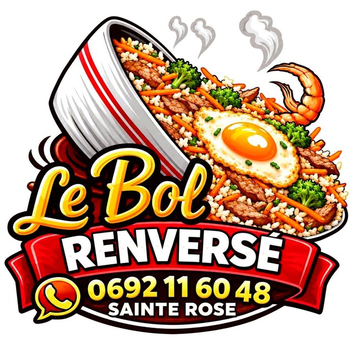
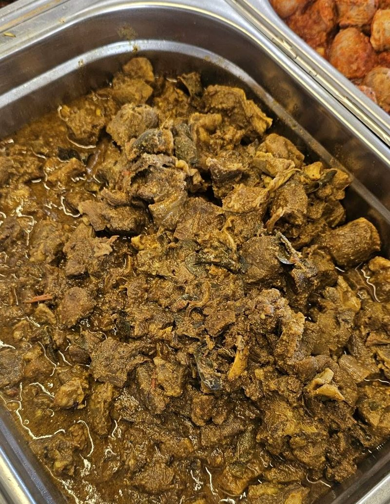
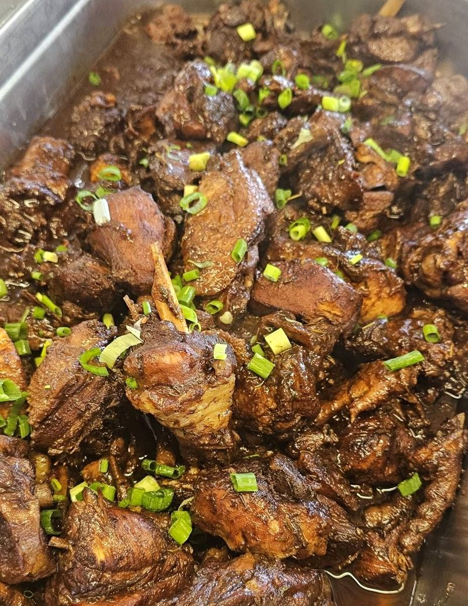
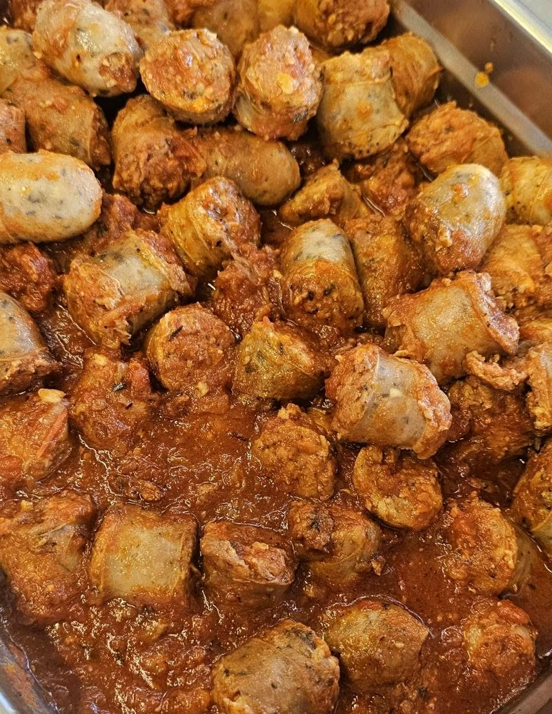

Piton Sainte-Rose · RN2
Une cuisine chinoise, créole et européenne, servie en famille, au bord de la route du Grand Brûlé.
Le nom de la maison vient d’un plat phare de la cuisine chinoise, aujourd’hui incontournable à la carte. Autour de lui, les saveurs se croisent : spécialités créoles revisitées, inspirations européennes, assiettes généreuses faites maison.
C’est une affaire de famille, installée dans un coin fleuri de l’Est, où habitués et voyageurs de passage s’attablent ensemble.



Du bol renversé aux caris mijotés, une cuisine qui donne envie de s’arrêter sur la route.Esprit de la page Facebook du restaurant : « Venez savourer nos spécialités maison dans une ambiance chaleureuse et conviviale ! »
| Lundi, jeudi, dimanche | 10h – 14h |
| Mercredi, vendredi, samedi | 10h – 14h · 18h – 21h sur réservation |
| Mardi | Jour de repos |
Horaires publiés sur la page Facebook le 30/09/2025 ; la maison annonce ses fermetures exceptionnelles sur la page.
398 Route Nationale 2, Piton Sainte-Rose, 97439 Sainte-Rose
lebolrenverse.restaurant@gmail.com